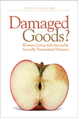

How living with a chronic, stigmatizing, and contagious disease transforms women's lives
How living with a chronic, stigmatizing, and contagious disease transforms women's lives


 How living with a chronic, stigmatizing, and contagious disease transforms women's lives
How living with a chronic, stigmatizing, and contagious disease transforms women's lives

|  |
Damaged Goods?Women Living with Incurable Sexually Transmitted DiseasesAdina Nack, Ph.D.paper EAN: 978-1-59213-708-4 (ISBN: 1592137083) |
"Damaged Goods extends major ideas about stigma and links them to women's sexual selves. It makes the most explicit links that I have seen between sexually transmitted disease and how women construct and reconstruct their sexual selves and does so in an engaging, accessible way. Nack's emphasis on how these women see themselves as sexual beings is particularly strong. She advances the literature in this area."
—Kathy Charmaz, Sonoma State University
How do women living with genital herpes and/or HPV (human papilloma virus) infections see themselves as sexual beings, and what choices do they make about sexual health issues? Adina Nack, a medical sociologist who specializes in sexual health and social psychology, conducted in-depth interviews with 43 women about their identities and sexuality in regards to chronic illness. The result is a fascinating book about an issue that affects over 15 million Americans, but is all too little discussed.
Damaged Goods adds to our knowledge of how women are affected by living with chronic STDs and reveals the stages of their sexual- self transformation. From the anxiety of being diagnosed with an STD to issues of blame and shame, Nack-herself diagnosed with a cervical HPV infection-shows why these women feeling that they are "damaged goods," question future relationships, marriage, and their ability to have healthy children.
Excerpt available at www.temple.edu/tempress
"Adina Nack has created a compelling story, based on in-depth interviews, about what happens when women have their illusions of being immune from sexually disfiguring and stigmatizing infections dashed by the misfortune of transmission. Who would guess that a work framed so well theoretically, would be such a page-turner? She draws on her own experiences as a sexual health educator and as someone who, like her interviewees, is living with a chronic STD, to explain what happens to women’s sexual selves, and how they negotiate sexual decision making. An engaging and important read, it addresses vital information in a compelling and engaging way that will be valuable for those with STDs as well as those who care for them."
—Betsy Crane, Ph.D., Director of Graduate Programs in Human Sexuality, Widener University
"This book is a rich and thoughtful account of the painful stigma experienced by women when faced with a sexually transmitted disease. It underscores the consequence of our sexual silence and the power of our sexual lives. The personal stories highlight the critical role of sexual health education, particularly for youth, their families, and their medical providers. Nack’s auto-ethnography adds a lens that deepens the connectedness of science to the real world."
—Cynthia A. Gómez, Ph.D., Director, Health Equity Initiative, San Francisco State University
"Verdict: Nack’s book is relevant to researchers interested in the psychological effects of sexually transmitted diseases on women. Primarily research-based, it appears to be the first of its kind on the subject. Recommended for academic libraries serving that population as well as public health libraries."
—Library Journal
"[A] valuable volume...comprehensive."
—Women, Girls & Criminal Justice
"This book makes a significant addition to the sexual health research literature by focusing on women who live with a condition other than HIV, but its most important contribution is the concept of a reintegrated sexual self that not only can survive a chronic STD, but also triumph over stigma, sexual health politics, and the social construction of immorality. This work will interest sexual health educators, feminists, women's health specialists, and scholars who integrate qualitative methodology into their research. Summing Up: Recommended."
—Choice
"Nack's detailed writing successfully captures women's voices. It is clear she immersed herself in understanding the process of what one goes through before, during, and after being diagnosed with an incurable STD.... Another strength of the book is the way she frames women's experiences in the context of the stages of sexual transformation.... This book offers the unique perspective of women living with chronic STDs, and provides information that would be invaluable to clinicians, educators, and policy makers. The book is especially helpful to those who are creating programs and/or policies regarding public awareness, sex education content, and screening practices of clinicians."
—Gender & Society
"Her work is both informative and educational but also provides a sociological analysis...it holds wide appeal for many audiences including those interested in the social-psychological impact of having HPV.... [T]his study certainly provides us with an excellent framework for understanding the lives of women living with HPV."
—Sociological Insight
"The book has a number of strengths; most importantly, the topic and approach are original, insightful, and engaging. The author writes about her own experience in an auto-ethnographic opening chapter, and then underlines broader social and psychological implications through her study’s one-on-one interviews. Nack highlights how sexual health discourse furthers gender subordination and other social norms in an accessible and exciting manner."
—The Journal of Sex Research
"[A]n insightful and theoretically rich examination.... the interview narratives are particularly compelling.... In bringing together issues of chronic illness, gender and sexuality, Damaged Goods? provides a valuable addition to studies of women's health and draws attention to the increasing importance of sexual health studies in the United States."
—Contemporary Sociology
Read Adina Nack's blog on girlwithpen.blogspot.com.
 | Adina Nack is Associate Professor of Sociology at California Lutheran University and has been involved with sexual health education for more than a decade as an outreach worker, health educator, and researcher, as well as a professor of sexuality studies. She is a member of Ventura County's HIV/AIDS Coalition and, for several years, has been the organizer of the county's World AIDS Day events. Visit her on the web at www.adinanack.com. |
Women's Studies
Health and Health Policy
Sociology
© 2015 Temple University. All Rights Reserved. This page: http://www.temple.edu/tempress/titles/1936_reg.html.